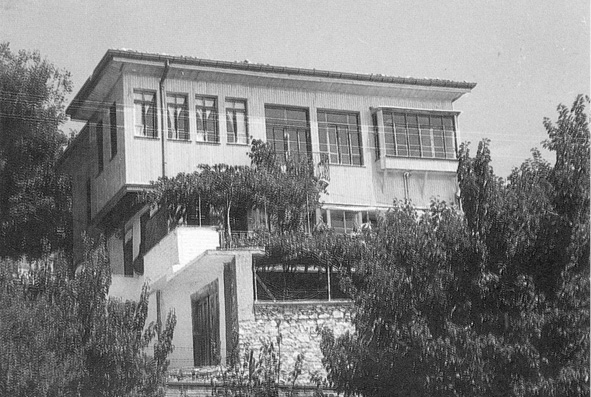

Barla’ya İkinci Vuslat
Hazreti Üstad’ın 24 Temmuz 1934’te Barla’dan ayrılışından yirmi sene sonra Barla’ya ikinci gelişi, 1954
Yine Tarihçe’den Güzel ve His Dolu Satırlar…
Üstad, Barla’dan yirmi küsür sene evvel ayrılmış ve o zamana kadar hiç gitmemişti. Barla ile, kendi Nurs köyünden ziyade alâkadardı. Çünkü hayat-ı mâneviyesi olan Risale-i Nur burada te’lif edilmeye başlamıştı. Kur’ân-ı Hakîm’in hidayet nurlarını temsil eden Sözler ve Mektubat ve Lemeât-ı Nuriye buradan etrafa yayılmıştı. Bu itibarla Barla, Risale-i Nur dershanesinin ilk merkezi idi.
Barla’daki hayatı gerçi nefiy ve inzivâ içinde ve tarassut altında geçmekle acı idi; fakat Risale-i Nur hakikatlerinin telif yeri olduğundan, Üstad’ın en tatlı ve şirin hayatı da yine Barla hayatıdır, denilebilir. Bu defa Barla’ya nefiyle değil, hapisle değil, kendi rızasıyla ve serbest olarak gidiyordu. Güzel bir bahar günü Barla’ya geldi. Barla’daki talebelerinin mühim bir kısmı Üstad’ı karşıladılar. Üstad, sekiz senelik ikâmetgahı olan medrese-i Nuriyesine yaklaşırken kendini tutamadı, mübarek gözlerinden yaşlar boşandı. Haşmetli çınar ağacı da âdetâ kendisini selâmlıyordu. Bir vakitler, yani Barla’da sekiz sene ikametten sonra Isparta’ya celbedilmişti. O zamanki gidişinde mübarek çınar ağacı Üstad’ı mânen teşyî etmiş, haşmetli kanatları olan dallarının Cenab-ı Hakk’a olan secdevâri ubûdiyetiyle Üstad’ı uğurlamıştı. Bu defa da yine uzun bir mufarakattan sonra tekrar Üstad’a kavuşmanın süruru içinde Hâlık-ı Rahmân’a secde-i şükrana kapanıyordu. Üstad, o mübarek çınar ağacına sarılmış, yanındaki talebelerine ve ahaliye kendisini yalnız bırakmalarını söylemişti. Zaten gözyaşlarını tutamıyordu. Sonra, Nur dershanesi olan odasına girdi ve iki saat kadar kaldı. Hazin ağlayışı dışarıdan işitiliyordu.
Evet, şüphesiz rahmet-i ilâhiyenin nihayetsiz tecellîlerine mazhardı. Bir zamanlar Şarkî Anadolu’dan Isparta havalisine sürülmüştü. Isparta’dan da, dağlar arasındaki Barla nahiyesine nefyedilmişti. Burada ölüp gidecekti. Eski tarihçe-i hayatının şehadetiyle, çok kahraman ve fedakâr olan bu zat, doğrudan doğruya Kur’ân-ı Hakîm’in hakikatlerini benimseyen, ferdî ve millî saadeti, İslâmiyet hakikatlerine sarılmakta gören ve bunu haykıran ve delâil-i akliye ile ilim meydanına çıkan bir kimse idi.
Üç devir geçirmiş, cebbar kumandanlara boyun eğmemiş, kudsî dâvâsından dönmemiş; yaralanmış, zehirlenmiş, ölmemiş; dağlar gibi hâdiselerin dalgalarından yılmamıştı.
Milletleri, kavimleri içine alan, zihniyet ve telâkkileri değiştiren asr-ı hâzırın cereyanları, bu zâtı Kur’ân ve iman dâvâsındaki yolundan çevirememişti. O, ruhundaki şecaat-i imaniye ile kat’î inanıyordu ki; dâvâ ettiği hakikat birgün milletçe benimsenecek, bir Said, binler, belki yüz binler Said olacak... İnsanlık camiasında neşrettiği hakâik-i imaniyenin fütuhatı ve inkişafı başlayacak ve âfâk-ı İslâm’ı saran zulmet bulutları Kur’ân’dan eline verilen bu meş’ale-i hidayetle dağıtılacak; ölmeye yüz tutmuş zannedilen iman ruhu yeniden canlanacak; canlara can katacak, mânen ölmeye yüz tutan millet-i İslâmiye’yi ihyâ edecek; âleme efendi olan İslâmiyet’in –biiznillâh– cihana efendiliğinin maddî mânevî mübeşşiri olacaktı.
İşte, bu kudsî hakikatin hâmili ve naşiri olan ve hakikatte bugünkü beşeriyetin medâr-ı iftiharı bulunan bu aziz zat, din düşmanlarının plânıyla –vaktiyle– bu beldeye gönderilmiş, Anadolu’dan tesis ettirilen rejimin aleyhinde bulunmasına, fiilî müdahalesine mümanaat olunmuştu. Heyhat! Esasen kendisi siyasetten çekilmişti; ehl-i dünyanın dünyasına karışmıyordu. O, istikbali nurlandıracak bir hakikatin telif ve neşrine çalışıyordu. Kâinatın sahibi ve hâdiselerin mutasarrıfı olan Allah, onun hâmisi, muîni ve yardımcısı idi.
İşte, yirmi sene sonra (1934’de Barla’dan ayrıldıktan yirmi sene sonra; yani 1954 senesinde) tekrar Barla’ya döndüğü zaman, hizmet-i imaniyesinde nâil olduğu büyük ikramları, inâyetleri düşünerek, müşâhede ederek mesrur oldu ve sürurundan ağlıyordu, secde-i şükrana varıyordu.
Hâl-i hazırda Üstad Isparta’da ikamet eder. Bazen Emirdağ’a, bazen Barla’ya gider. Buraları Risale-i Nur’un te’lif ve inkişaf merkezleri olduğu için ruhen çok alâkadardır. Hem, kendisi doksan yaşına yaklaştığı ve birçok defalar zehirlendiği için rahatsızdır. Hastalığı tarif edilmeyecek derecede ağırdır ve şiddetlidir. Ruhen, hissiyatı kuvvetli ve âlem, bâhusus âlem-i İslâm, bilhassa Risale-i Nur dairesi, vücud-u mânevîsi hükmünde olduğundan, her iki vücudundaki ıztırap şedittir. Gerçi talebelerinin duaları ve neşr-i envâr-ı imaniye o ıztırabına bir merhem ve devâ ise de, yine de pek vâsi şefkati itibarıyla zaman zaman ıztırabı şiddetlenmektedir. Bu itibarla, tebdil-i havaya çok muhtaçtır. Bir yerde fazla kalamıyor. Tebdil-i havaya çıktığı zaman hastalığı kısmen azalıyor, rahat nefes alabiliyor.
Üstad, Risale-i Nur kesretle intişar ettiğinden ve her yerde pek çok Nur talebeleri mevcut olduğundan, halklarla konuşmayı tamamıyla terk etmiştir. “Risale-i Nur, benimle sohbetten on derece ziyade faydalıdır.” deyip ziyaretçi de kabul etmemektedir. Hattâ yanındaki talebeleriyle dahi zaruret halinde konuşmaktadır.
Artık hayatının son safhasına geldiğini söylemekte, daima içinde yaşadığı ayı çıkarabileceğinden şüphe eder bir vaziyette ecelini beklemektedir. Nur’ların neşriyatından memnun ve müteşekkirdir. Millet ve devletçe İslâmiyet ve saadet yolunda atılan her adımı takdir ve tasviple karşılamakta, Hak yolunda yürüyen, İslâmî şeâiri ihya edenlere dua etmektedir. Aynı zamanda, âlem-i İslâm’ın maddeten ve mânen selâmet ve saadetini dilemekte ve bu yolda girişilen dahil ve hariçteki gayretlerden hadsiz derecede sevinç ve memnuniyet duymaktadır.
Risale-i Nur’u Kur’ân-ı Hakîm’in bu zamana mahsus bir mucizesi bilmekte, bu vatanı komünizm tehlikesinden Risale-i Nur’daki hakikat-i Kur’âniye muhafaza ettiğini beyan etmekte ve âlem-i İslâm’la hakikî kardeşliğe ve uhuvvete ve ittifaka medar olacağını, dünyevî ve uhrevî saadetimizin bu hakikate yapışmamızda bulunduğunu duyurmaktadır.
Risale-i Nur’un Anadolu’dan başka diğer müslüman memleketlerde yayılmasının elzem olduğu kanaatindedir. Siyasî gayret ve faaliyetlerden evvel, Risale-i Nur’un neşrolunmasının daha menfaattar olacağını ihbar etmektedir. (Tarihçe-i Hayat / Barla Hayatı’ndan bir parça).

Barla’nın ikinci Nur Medresesi.
Nur Üstad’ın 1950’den sonra kaldığı yer. Nur Talebesi Enver Ağabey’in evi. Enver Efendi, Barla’da, Üstad Nur’un resmini çeken zattır.